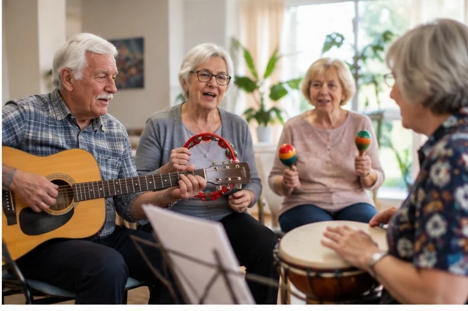
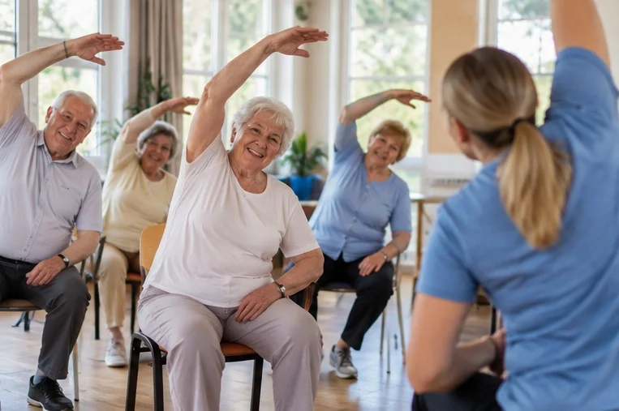
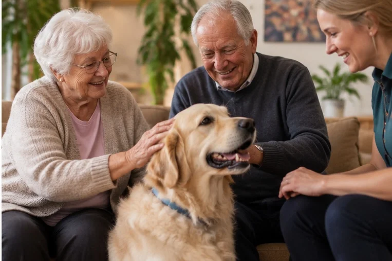
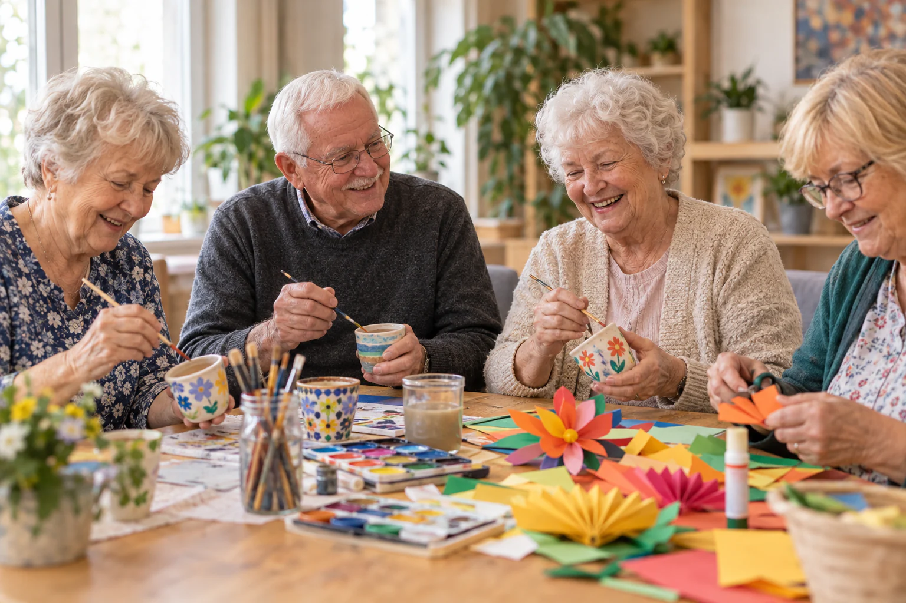
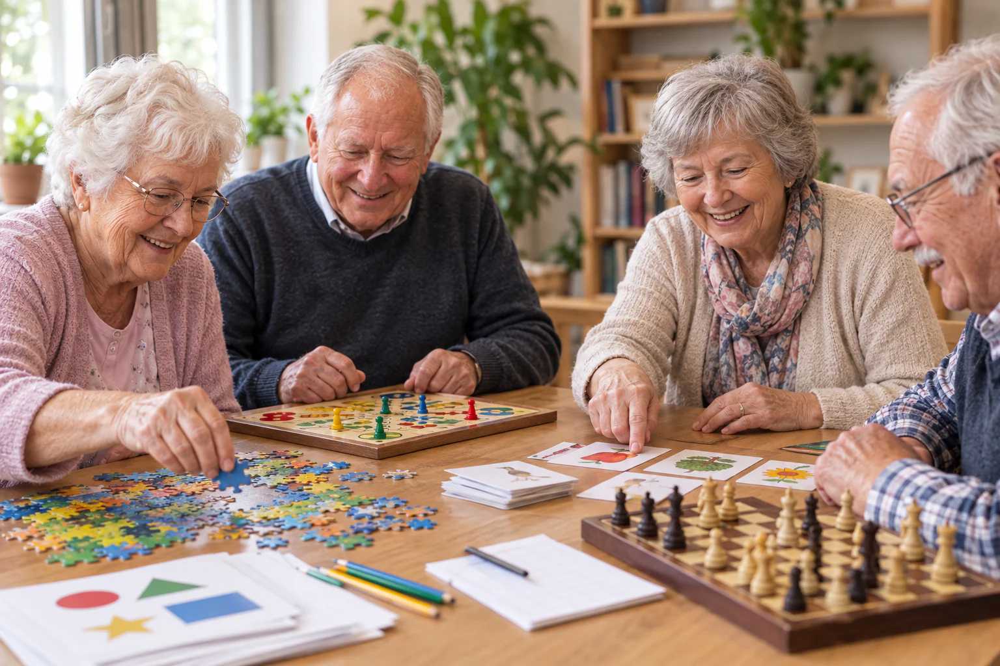
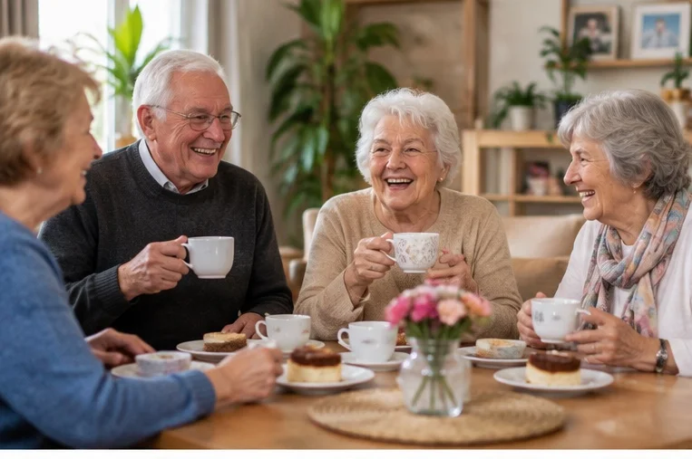
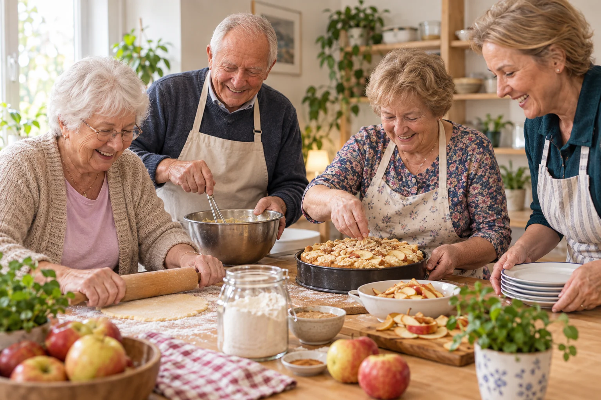

Muzykoterapia i spotkania z muzyką
Znane piosenki, wspólne śpiewanie, rytm, proste instrumenty i muzyczne wspomnienia. Planujemy także spotkania z muzyką na żywo, karaoke, wieczory piosenki oraz tematyczne podróże muzyczne.
Zajęcia, terapie i codzienna aktywność dopasowane do potrzeb i możliwości każdego Seniora.

Każdy dzień może wyglądać trochę inaczej. Nie chcemy, aby pobyt u nas kojarzył się ze sztywnym planem. Proponujemy różne aktywności, ale pozostawiamy przestrzeń na odpoczynek, rozmowę i własne zainteresowania. Można być aktywnym przez cały dzień, a można wybrać tylko to, na co ma się ochotę.
Znane piosenki, wspólne śpiewanie, rytm, proste instrumenty i muzyczne wspomnienia. Planujemy także spotkania z muzyką na żywo, karaoke, wieczory piosenki oraz tematyczne podróże muzyczne.

Łagodne ćwiczenia ogólnousprawniające, gimnastyka, ćwiczenia równowagi i koordynacji, rozciąganie, spacery oraz inne formy aktywności prowadzone w bezpieczny i przyjazny sposób.

Spotkania z odpowiednio przygotowanym zespołem człowiek–pies zachęcają do rozmowy, ruchu i kontaktu z innymi – czas na głaskanie, proste aktywności i budowanie dobrej relacji ze zwierzęciem.

Nie trzeba umieć malować ani mieć zdolności artystycznych. Malarstwo, dekoracje sezonowe, rękodzieło, ceramika, decoupage, szydełkowanie i robótki ręczne – gotowe prace prezentujemy na wystawach i kiermaszach.

Quizy, gry słowne, łamigłówki, wspomnienia, ćwiczenia koncentracji, planszówki i zabawy zespołowe – z humorem, rozmową i ciekawością, bez szkolnej atmosfery i oceniania.

Jak wysłać zdjęcie wnukowi, odebrać wideorozmowę czy korzystać z internetu bezpiecznie? Tłumaczymy wszystko spokojnie, krok po kroku i tyle razy, ile będzie trzeba.

Przestrzeń, w której nie trzeba zapisywać się na żadne zajęcia. Można przyjść na kawę lub herbatę, poczytać, porozmawiać, zagrać w karty, szachy albo planszówkę.

Wspólne gotowanie i pieczenie, rodzinne przepisy, smaki dzieciństwa, sezonowe potrawy i wspólne nakrywanie stołu – pretekst do rozmowy, wspomnień i poznawania się.

Muzyka i ruch, spacery, nordic walking, potańcówki, wyjścia do kina, teatru, muzeum, kawiarni czy na lokalne wydarzenia – Pomarańcza wychodzi także poza własne drzwi.

Zapraszamy specjalistów, artystów, podróżników, lokalnych pasjonatów i osoby z ciekawą historią do opowiedzenia – o zdrowiu, bezpieczeństwie, kulturze, podróżach i historii regionu.

Seniorzy mają ogromną wiedzę i doświadczenie, którym mogą dzielić się z młodszymi – spotkania z dziećmi i młodzieżą, wspólne warsztaty, rozmowy, gotowanie i rękodzieło.
Pokażemy Centrum, opowiemy o zajęciach i odpowiemy na każde pytanie – bez zobowiązań.